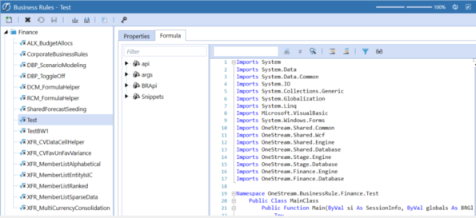
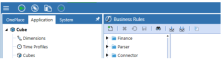
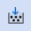
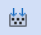

Use application tools to manage how you work with the OneStream application, configuring applications to best suit your needs. Application tools include setting application security roles, setting application properties, and scheduling data management sequences. In this section you will learn how to use these tools and others to manage the application environment.
Use Application Tools
Below are the specific Application-level security roles and what they control:
Administer Application
This role allows a user to administer the application and load zip files. This is useful when multiple applications exist in one environment and different groups of administrators/users need to administer separate applications.
Administrator Database
This application-level role is intended for a few people that are allowed to mass delete metadata and data, primarily using the database page.
This roleType is unlike most other roleTypes because Administrators are not automatically given access to operations that require this role.
Open Application
This allows the user to see and open the application.
Modify Data
This allows the user to modify data. The user is basically a read-only user throughout this application if he/she does not have this role.
View All Data
This allows a group of users to view all data in the application.
Create Audit Attachments
This allows the user to create data attachments for supporting documentation.
Create Footnote Attachments
This allows the user to create a footnote attachment for supporting documentation.
Certify and Lock Descendants
This allows the user to certify and lock descendants from the Workflow. This is typically an administrator function.
Unlock and UnCertify Ancestors
This allows the user to uncertify and unlock ancestors from the Workflow. This is typically an administrator function.
Preserve Import Data
The administrator will lock the Workflows and then preserve imported data when changes need to be made. The Workflow can then be unlocked so changes can be made.
Restore Import Data
This allows the administrator to restore imported data to the original state from the Preserve Import process.
Unlock Workflow Unit
This allows a user to unlock a Workflow Unit, however, the user must also have Workflow Execution access in order to lock a Workflow Unit.
View Source Data Audit
This allows a user to view the Source Data Audit Report within the Import Workflow.
Encrypt Business Rules
This allows a user to Encrypt and Decrypt a rule from the Business Rule screen in the Application tab, if the user is in the role.
Manage Application Properties
This allows a user to update this application’s properties.
Manage Metadata
This allows a user to edit metadata under the Dimension Library for this application.
Manage FX Rates
This allows a user to update FX Rates.
Manage Data
This allows users to manage data in all aspects included, but not limited to exporting data and clearing data completed through Data Management. This is typically an administrator function.
Manage Cube Views
This allows a user to create new Cube Views and manage Cube View Groups and Profiles.
Manage Data Sources
This allows a user to create new Data Sources.
Manage Transformation Rules
This allows a user to create new Transformation Rules and manage Transformation Rules Groups and Profiles.
Manage Confirmation Rules
This allows a user to create new Confirmation Rules and manage Confirmation Rules Groups and Profiles.
Manage Certification Questions
This allows a user to create new Certification Questions and manage Certification Question Groups and Profiles.
Manage Workflow Channels
This allows a user to create new Workflow Channels.
Manage Workflow Profiles
This allows a user to create new Workflow Profiles.
Manage Journal Templates
This allows a user to create new Journal Templates and manage Journal Groups and Profiles.
Manage Form Templates
This allows a user to create new Form Templates and manage Forms Groups and Profiles.
Manage Application Dashboards
This allows a user to create new Application Dashboards and manage Dashboard Groups and Profiles.
Manage Application Database Files
Two file systems which are stored in the Framework database (i.e., the System database) and each Application database. Users in the security roles for ManageSystemDatabaseFiles and ManageApplicationDatabaseFiles have full read and write access to his/her user folders in those two database file systems, respectively. These folders are private to the user and access is intentionally restricted to just the user and managers. Security cannot be edited for a user folder. Users can be given read and/or write access to specific folders in the database file systems using the individual folders’ security settings, however this excludes access to User folders and sub-folders.
Below are the specific Application-Level User Interface Roles and what they control:
Application Load Extract Page
This gives access to the Load/Extract screen located in |Application |Tools|. This is typically restricted to administrators.
Application Properties Page
This gives access to the Application Properties screen located in |Application |Tools|. This is typically restricted to administrators.
Application Security Roles Page
This gives access to the Application Security screen located in |Application |Tools|. This is typically restricted to administrators.
BookAdminPage
This gives access to the Book Designer screen located in |Application|Presentation|. This is typically restricted to administrators, or any users who create Report Books.
Business Rules Page
This gives access to the Business Rules screen located in |Application |Tools|. This is typically restricted to administrators.
Certification Questions Page
This gives access to the Certification Questions screen located in |Application| Workflow|. This is typically restricted to administrators.
Confirmation Rules Page
This gives access to the Confirmation Rules screen located in |Application |Workflow|. This is typically restricted to administrators.
Cube Admin Page
This gives access to the Cube Admin screen located in |Application |Cube|. This is typically restricted to administrators.
Cube Views Page
This gives access to the Cube Views screen located in |Application |Presentation|. This is typically restricted to administrators, or any users who create Cube Views.
Dashboard Admin Page
This gives access to the Dashboard Admin screen located in |Application |Presentation|. This is typically restricted to administrators.
Data Management Admin Page
This gives access to the Data Management Admin screen located in |Application |Tools|. This is typically restricted to administrators.
Data Sources Page
This gives access to the Data Sources screen located in |Application |Data Collection|. This is typically restricted to administrators.
Dimension Library Page
This gives access to the Dimension Library screen located in |Application |Cube|. This is typically restricted to administrators.
FX Rates Page
This gives access to the FX Rates screen located in |Application |Cube|. This is typically restricted to administrators.
Form Templates Page
This gives access to the Form Templates screen located in |Application |Data Collection|. This is typically restricted to administrators.
Journal Templates Page
This gives access to the Journal Templates screen located in |Application |Data Collection|. This is typically restricted to administrators.
Transformation Rules Page
This gives access to the Transformation Rules screen located in |Application |Data Collection|. This is typically restricted to administrators.
Workflow Channels Page
This gives access to the Workflow Channels screen located in |Application |Workflow|. This is typically restricted to administrators.
Workflow Profiles Page
This gives access to the Workflow Profiles screen located in |Application |Workflow|. This is typically restricted to administrators.
NOTE: Click  and begin typing the name of the Security Group in the blank field. As the first few letters are typed, the Groups are filtered making it easier to find and select the desired Group. Once the Group is selected, click CTRL and Double Click. This will enter the correct name into the appropriate field.
and begin typing the name of the Security Group in the blank field. As the first few letters are typed, the Groups are filtered making it easier to find and select the desired Group. Once the Group is selected, click CTRL and Double Click. This will enter the correct name into the appropriate field.
AnalyticsApi
This role allows a user to access OneStream connectors to pull data into external systems and to control who can use the connectors. The role becomes available when access to the Power BI Connector is granted. The role may be available for use with additional connectors in the future.
Use Application Tools
Use Application Tools › Application Properties
Global Point of View
These are enabled when forcing Global Scenario and Global Time through Transformation settings. An initial value should be configured even if the Transformation setting is not being used.
Global Scenario
This is the default Scenario users will see when looking at Workflow.
Global Time
This is the default Time users will see when looking at Workflow.
Company Information
Company Name
Place company name here for it to appear on automatically generated reports from Cube Views.
Logo File (png, height ~ 50 pixels)
Attach a logo file in order for it to appear on Cube Views and Reports. An image format of PNG is required approximately 50 pixels high.
Workflow Channels
UD Dimension Type for Workflow Channels
The Origin Dimension controls data load, but in some cases other User Defined Dimensions require their own layer of locking. For example, a company plans by Entity by Product. One Entity can have five products done by different people. Each channel can be locked separately to protect that layer of data instead of locking the entire Entity.
Formatting
Number Format
This shows the format for numeric values displayed throughout the application. Configure to show additional degrees of precision to the right of the decimal point. This setting can be overridden through Cube View formatting.
N0
This setting will not show any decimals or zeroes
N1-N6
These settings will show X amount of decimals. If N2 is chosen, two decimals are displayed, N5 will display five decimals, etc.
NOTE: The N in the above settings indicates that these settings are international.
The following formats use 10000.001 as an example.
#,###,0\%
This returns 10,000% and -10,000%
#,###,0
This returns 10,000 and -10,000
The three sections in a number format, separated by semi-colons, represent the format for positive numbers, negative numbers and zeros.
#,###,0;(#,###,0);0
This returns 10,000 and (10,000)
#,###,0.00%
This returns 10,000.00% and -10,000.00%
#,###,0.00
This returns 10,000.00 and -10,000.00
#,###,0.00;(#,###,0.00);0.00
This returns 10,000.00 and (10,000.00)
NOTE: In order to vertically align positive and negative numbers in reports where parenthesis are used for negative values, include trailing spaces in the positive number format. This will account for the trailing parenthesis used by negative numbers.
Example: #,###,0.00 ;(#,###,0.00);0.00
NOTE: Click , select the desired format, and click CTRL and Double Click. This will enter the correct format into the appropriate field.
Currencies
All currencies used in the application must be listed here in order to be used on the Entity, to do any translation of currency, or enter any rates. The list of currencies will include any available currencies that are pre-Euro, or phased out currencies for historical data loading purposes. If a now defunct or new currency is not listed and is needed for the application, call OneStream Support.
Transformation
Enforce Global POV
If set to True, this will enforce the current Global Scenario and Time setting for all users, so they cannot change their Workflow View. If the Global POV is enforced,  will display on the Import task during the Workflow.
will display on the Import task during the Workflow.
Allow Loads Before Workflow View Year
If set to True, this will enforce the current Workflow View setting to allow data loading to time periods prior to the current Workflow year. If this is set to False, data cannot be imported to time periods prior to the current Workflow year and  will display on the Import task during the Workflow.
will display on the Import task during the Workflow.
Allows Loads After Workflow View Year
If set to True, this will enforce the current Workflow setting to allow data loading to time periods after the current Workflow year. If this is set to False, data cannot be imported to time periods after the current Workflow year and  will display on the Import task during the Workflow.
will display on the Import task during the Workflow.
Certification
Lock after Certify
If set to True, this will auto lock after certification in the Workflow.
Use Application Tools › Application Properties

Time Dimension
Start Year
The starting year of the application.
End Year
The ending year of the application.
User Defined Dimensions (Descriptions)
Applies a custom description to the eight User Defined dimensions. The description applies to the dimension type, not to each dimension and will be visible to the user in various interfaces in the OneStream Application. The descriptions display in the hover/tool-tips, pop-up windows and other dimension interfaces. These are viewable in:
-
Point of View
-
Dimension Library
-
Cube View Member Filters
-
Drill Down Dimension headers
-
Excel Add-in / Spreadsheet
-
Journals
UD1-8 Description
Enter a generic description that best describes the purpose of each User Defined dimension. See example above.
Standard Reports
These settings will be applied with auto-generating a report from a Cube View.
Logo
Height
Enter a numerical value to determine the Height of the report. (e.g. 105 pixels)
Bottom Margin
Enter a numerical value to determine the Bottom Margin size.
Title
Top Margin
Enter a numerical value to determine the Top Margin size.
Font Family
The font displayed in the Title of the report.
Font Size
Enter a numerical value to determine the size of the font.
Bold
If set to True, the Title will be bold in the report.
Italic
If set to True, the Title will be in italics in the report.
Text Color
Use the ellipsis icon to choose a text color for the report Title.
Use Application Tools › Application Properties
This is where the default Header Label properties are defined for all the reports in the application.
Top/Bottom Margin
Enter a numerical value to determine the Top/Bottom Margin size.
Font Family
The font displayed in the Header Labels of the report.
Font Size
Enter a numerical value to determine the size of the font.
Bold
If set to True, the Header Labels will be bold in the report.
Italic
if set to True, the Header Labels will be in italics in the Report.
Text Color
Use the ellipsis icon to choose a text color for the Header Labels.
Use Application Tools › Application Properties
Use Application Tools
See the API Overview Guide.
There are several areas in the product using the exact same rule syntax and applying it to how data is imported, how the Cubes are calculated, and other operations. Once this syntax is understood, logic can be written.
Note:
There are three ways to write this calculation logic:
Business Rules
Business Rules are found under the Application Tab|Tools. There are nine types of Business Rules as shown below. These can be stored, secured, and then assigned to multiple areas of the product with the ability to re-use them.
Complex Expression
This logic can be created as a Business Rule or as a Complex Expression from within an application artifact such as a Data Source. The syntax is the same with the only difference being that a Business Rule can be shared across multiple application artifacts where a Complex Expression is contained within the artifact.
Member Formula
The same Business Rule syntax can be applied to Member Formulas as well. This logic stays with the Member and cannot be shared.
There are also three utility groups available when writing Business Rules:
BRAPI
BRAPI provides application programming interface to commonly used functions involving all areas of the product where a Business Rule can be used.
API
The more specific API provided as a Parameter to a Business Rule provides functions specific to the type of Business Rule being written. For example, when implementing a Business Rule for a finance-oriented task, API refers to the functions used for processing calculation logic and other capabilities related to processing a Cube's data and metadata.
ARGS
An argument represents the value passed to a Business Rule when the procedure is called and the calling code supplies the arguments. For example, if a Parser Business Rule is assigned to the Account Dimension, args will supply the Account Dimension data as well as a set of functions available to use against that data. Different args will be provided depending on the type of Business Rule used.
Business Rule Encryption (Decryption)
There is also functionality to Encrypt and Decrypt Business Rules with password protection when writing and saving Business Rules.
The authorized user can Encrypt Business Rule by clicking the encrypt button.

Once clicked, an Encrypt Business Rule dialog will display prompting the user for a password. The user will create and enter the password and then reenter the password in the box below and click OK. The system encrypts the Business Rule, displays “Business Rule Is Encrypted” message text in the editor and the editor is in read-only mode.
NOTE: It is important to remember and record the password being used for each Business Rule being encrypted or the Business Rule will not be able to be decrypted for further changes without the assistance of OneStream Support.
To Decrypt a Business Rule, an authorized user can Decrypt Business Rule by clicking the Decrypt button  . At this time, the Decrypt Business Rule dialog box will display prompting the user for a password. User will enter the password and click OK. The system will decrypt the Business Rule, display the Business Rule text editor and then return to read/write mode again.
. At this time, the Decrypt Business Rule dialog box will display prompting the user for a password. User will enter the password and click OK. The system will decrypt the Business Rule, display the Business Rule text editor and then return to read/write mode again.
Set the proper access to Encrypt Business Rules to allow an authorized user to Encrypt and Decrypt a rule from the Business Rule screen in the Application tab, if the user is in the role.

Next advance to the Business Rules section (Application Tab>>Tools>>Business Rules) and Refresh the screen and the Encrypt Business Rule button will appear in the menu.
Select the Business Rule to be encrypted, then select the Encrypt Business Rule button.

At this time, an Encrypt Business Rule dialog will display prompting the user for a password.

The user will create and enter the password, then Re-Enter the password in the box below and click OK.

The system encrypts the Business Rule, displays “Business Rule Is Encrypted” message text in the editor and the editor is in read-only mode and the Decrypt Business Rule button is now displayed in the menu bar.

To Decrypt a Business Rule, an authorized user can Decrypt Business Rule by clicking the Decrypt button . At this time, the Decrypt Business Rule dialog box will display prompting the user for a password.

User will enter the password and click OK.

The system Decrypts the Business Rule displays the Business Rule text editor and the Business Rule is in read/write mode again.

Business Rule Search
Find a business rule quickly by performing a search instead of scrolling through business rules.
-
Select the Application tab.
-
From Tools, select Business Rules.

-
Click Business Rule Search. The Object Lookup dialog box opens.
-
Start typing the start of the business rule name. All business rules that match your text display in the list.

-
Select the business rule from the list and click OK.
Business Rule Toolbar and Hotkeys

Compile Business Rule to Check SyntaxUse this to compile a selected Business Rule in order to check its syntax.

Compile All Business Rules and Formulas to Check SyntaxUse this to compile all Business Rules and Formulas in order to check syntax. This is most commonly used after installing a software upgrade where some Rule or Formula syntax may have changed. This feature is only available for application administrators.
 Execute Extender
Execute Extender
Use this to run the selected Extender Business Rule
Encrypt Business Rule
Use this to Encrypt the Business Rule formula. Clicking this button will be prompt the user to enter a password in the Encrypt Business Rule dialog box to complete the encryption process.
Decrypt Business Rule
Use this to Decrypt the Business Rule formula. Clicking this button will be prompt the user to enter a password in the Decrypt Business Rule dialog box to complete the encryption process.
Ctrl+M
Expand /Collapse all regions and methods. Click in the script after selecting the Business Rule in order to use the hotkey.
Business Rule Client Image Types
Client images are specified via a XFClientImageType Class in a Business Rule. These images can display on certain Dashboard Parameter Components such as Buttons, Maps, SQL Table Editors, Grid Views, etc.
The Image Types are as follows:
-
StatusGrayBall
-
StatusWhiteBall
-
StatusOrangeBall
-
StatusBlueBall
-
StatusRedBall
-
StatusLightGreenBall
-
StatusGreenBall
-
StatusGrayCheckMark
-
StatusGreenCheckMark
-
StatusLockedWithCheckMark
-
StatusLockedWithFolder
Use Application Tools › Business Rules
General
Name
The name of the Business Rule
Type
The type of Business Rule (see below for a detailed description of each Business Rule Type)
Contains Global Functions for Formulas
Set this to True to write a function in a Business Rule and then call the function from Member Formulas or other Business Rules. This is helpful when the same code must be copied to multiple Member Formulas and instead of using the same complicated code, a Public function with two lines of code written in a Business Rule can be called. Only use this setting for Business Rules referenced from Member Formulas because it does incur some overhead when the system needs to compile Member Formulas.
For more details on this feature, see About the Financial Model.
Referenced Assemblies
Enter a list of referenced assembly names separated by semi-colons.
Reference Another Business Rule
To reference another Business Rule, enter BR\ followed by the other Business Rule name.
BR\SharedFunctionsBR
Example:
Dim sharedFinanceBR As New OneStream.BusinessRule.Finance.SharedFinanceFunctions.MainClass
Dim myResult As String = sharedFinanceBR.Test(si, api, args)
For more details on this feature, see Referencing a Business Rule from a Member Formula or Business Rule in About the Financial Model.
Reference a DLL File
DLL files can be stored in the File Share’s Business Rule Assembly Folder, an Application Server Configuration File, or in a common Network Share Folder to which numerous Application Servers can reference. To reference a DLL File, enter XF\ followed by the DLL file name.
XF\ThirdPartyFunctions.dll
Otherwise, use no prefix and enter the full path and file name of any DLL file stored on the application server(s) file system.
Is Encrypted
This will be set to True if the Business Rule has been encrypted or False if it has not been encrypted.
Security
Access
Members of this group will have access to the Business Rule
Maintenance
Members of this group have the authority to maintain the Business Rule
NOTE: Click and begin typing the name of the Security Group in the blank field. As the first few letters are typed, the Groups are filtered making it easier to find and select the desired Group. Once the Group is selected, click CTRL and Double Click. This will enter the correct name into the appropriate field.
Business Rules Editor Overview
The OneStream Business Rule editor is a powerful in-solution screen that provides integrated API context help, syntax editing with intelli-sense, and full outlining capabilities. The actual syntax content and Business Rule structure will be discussed at length in subsequent sections of this document.
The image below explains the major regions and elements of the Business Rule editor.

Use Application Tools › Business Rules
Finance Rule
Finance Business Rules are used to generate multi-Dimensional calculations. These Business Rules are written as Shared Business Rules and applied to a Cube or Member Formulas. Eight of these can be assigned to run at the Cube level during consolidations.
Example APIs
api.FunctionType
The expression used when special logic needs to be run and a certain process needs to be isolated.
Finance Function Type
Calculate
Additional logic during calculation of Entity, Consolidation Scenario and Time. This sets the value of one or more values (left side of Formula) equal to another (right side). It then executes a calculation for a specifically qualified Point of View. This is the most common function used.
Translate
Additional logic that uses custom translation.
FXRate
Custom logic used to determine Foreign Exchange rates for any intersection.
Consolidate Share
Additional logic used during the custom calculation of the Share Member.
Consolidate Elimination
Additional logic used during the custom calculation of the Elimination Member.
Calculation Drill Down Member Formula
Provides custom drill down results.
Conditional Input Rule
Conditional Input Rules make data cells read-only. While the settings for this can be done directly on the Cube, using a Conditional Input Business Rule offers more flexibility and still allows the use of the Cube settings. This rule can return the following: ConditionalInputResultType.Default, ConditionalInputResultType.NoInput, ConditionalInputResultType.NoInputAllowCellDetail, and ConditionalInputResultType.NoCellDetailAllowInput.
The following Business Rule example will make all cells for the Account 6000 read-only. This should be added to a Business Rule attached to a Cube.
Case Is = FinanceFunctionType.ConditionalInput
If api.Pov.Account.Name.XFEqualsIgnoreCase("6000") Then
Return ConditionalInputResultType.NoInput
End If
Return ConditionalInputResultType.Default
Confirmation Rule
Special logic that runs with Confirmation Rules.
Data Cell
Named GetDataCell calculations that can be reused such as a Better/Worse calculation in Cube Views.
Dynamic Calc Account
Special logic to use in Dynamic Calc members.
Member List and Member List Headers
A custom list of members for use in Cube Views and other areas. See Commonly Used Member Filter Functions in Cubes for more details on using custom lists in a Cube View.
Finance Business Rule Example

Parser Rule
Parser Business Rules are used to evaluate and/or modify field values being processed by the Stage Parser Engine as it reads source data. These Business Rules are written as Shared Business Rules or Logical Expressions and applied to a Data Source Dimension.
Example API
args.Line
This will return the entire record being processed from the Data Source.
args.Value
This will return the Dimension the Business Rule is assigned to in the Data Source.
Common Usage
-
Custom parsing logic
-
Field value concatenation
-
Field value bypassing
-
Evaluate field other than current field being parsed
Parser Business Rule Example

Connector Rule
Connector Business Rules are used to communicate with, collect data from, and drill back to external systems. These Business Rules are written as Shared Business Rules and applied to a Data Source.
See Connectors in Collecting Data for more information on using Connectors.
Example API
args.ActionType
This will return one of the four available Connector action types.
ConnectorActionTypes.GetFieldList
This will run the SQL query to return the available field list to the Data Source for Dimension assignment.
ConnectorActionTypes.GetData
This will run the SQL query to retrieve the source data and return it to the Stage based on the Data Source Dimension assignment.
ConnectorActionTypes.GetDrillBackTypes
This will return a list of the specified drill back types. (e.g., File or Data Grid)
ConnectorActionTypes.GetDrillBack
This will run the required SQL query against the source system and will provide greater detail than what was originally imported.
Connector Business Rule Example
Namespace OneStream.BusinessRule.Connector.RevenueMgmtHouston


Conditional Rule
Conditional Rules (mapping) are used to conditionally evaluate mapping criteria during the data transformation process. These Business Rules are written as Shared Business Rules or Logical Expressions and applied to a Transformation Rule definition.
They are only applicable to Transformation Rules with the type of Composite, Range, List, or Mask either as a Business Rule or Complex Expression.
Example API’s
args.GetSource
This will return the source value for the specified Dimension.
args.GetTarget
This will return the mapped or transformed value for the specified Dimension.
args.OutputValue
This will return the originally mapped target value from the Transformation Rules.
Conditional Business Rule Example 1
Conditional Rule for Dimension Member mapping based on source values. Note that if the Business Rule does not call args.OutputValue, the target field can be empty and will not be considered.

Conditional Business Rule Example 2
Conditional Rule for Dimension Member mapping based on target values.

Derivative Rule
Derivative Rules (derive data prior to mapping) are used to evaluate and/or calculate values during the data derivation process. These Business Rules are written as Shared Business Rules or Logical Expressions and applied to a Derivative Rule definition.
They are only applicable to Transformation Rules with the type of Derivative either as a Business Rule or Complex Expression.
Common Usage
-
Calculate mathematical expressions
-
Lookup value from transformation cache for use in calculations
-
Lookup value from Cube for use in calculations
-
Source system check rule logic (validation rules on source data)
Derivative Business Rule Example

Cube View Extender
Cube View Extender Rules are used to apply advanced Cube View formatting to any Cube View while in Report view.
NOTE: These rules do not apply to how a Cube View looks like in the Data Explorer Grid view.
The Extender Rule is used in conjunction with the Execute Cube View Extender Business Rule setting on the Cube View. See Cube View Extender: Advanced Cube View Formatting in Implementing Security for examples on how to use this rule. See the API Overview Guide.
Common Usage
The following are key uses for Cube View Extender Business Rules in formatting Reports.
-
Alter Headers and Footers
-
Display different logos on select reports based on conditional logic or security and manage their placement and size
-
Customize the page number in the header or footer
Page numbers can be on the top or bottom row of a report and the horizontal position can be specified for rows. This only applies to the top or bottom rows. -
Format individual header and footer fields
-
Control the Left, Right, Center Subtitle widths
-
Control the font size of Title and Subtitles
-
Customize the date display
-
-
Alter Column and Row Headers
-
Customize bottom text alignment
-
Control Word Wrap
-
-
Apply Conditional Formatting to Data Cells
-
Format cells based on their contents
-
Change the text color of a value in order to effectively hide the result
-
Dashboard DataSet
DashboardDataSet Rules are used to create programmatic query results. This rule type combines multiple types of data into a single result set using the full syntax capability of VB.Net. These Business Rules are written as Shared Business Rules and applied to Dashboard Data Adapters or Dashboard Parameters.
Common Usage
-
Combine different types of data for a report
-
Build programmatic data queries (e.g., analytic plus sql)
-
Conditionally build data query reports
-
Conditionally build data query for Parameters
-
Create geographical data to display via a Map Parameter Component in a Dashboard
-
Create a data series to display via a Chart (Advanced) Parameter Component in a Dashboard
Dashboard Extender
DashboardExtender Rules are used to perform a variety of tasks associated with custom Dashboards and OneStream Solutions. These Business Rules can be thought of as multi-purpose rules and make up the majority of the code written in a OneStream Solution. In addition, they are written as Shared Business Rules and applied to Application Dashboard Parameter Components (Buttons, Combo Boxes, etc.).
Common Usage
-
Execute task when the user clicks a button
-
Perform a task and show a message to the user
-
Perform a custom calculation
-
Upload a file from the end user’s machine
-
Automate a Workflow
-
Build a custom Workflow
-
Create custom data tables
-
Include Page State to store parameters and values about a specific Dashboard page instance
Dashboard XFBRString
BRString(brRuleName, funcNameWithinBRRule, optionalName1 = var1, optionalName2 = var2)
Enter the Business Rule as a Parameter using |!BRString!|
The return value from the Business Rule will be used in the Dashboard Component.
NOTE: This Business Rule can be applied to any Dashboard or Cube View property where a Parameter is used.
Extensibility Rule
Extensibility Rules have these two types: Extender and Event Handlers. Extender Rules are the most generalized type of Business Rule in the OneStream platform. Use these to write a simple utility function or a specific helper function called as part of a Data Management Job. Event Handlers are exclusively called before or after a certain operation occurs within the system.
IMPORTANT: Full Administrator rights are required to edit Extensibility Rules.
Extensibility Business Rule Example
Event Handler that sends an email notification after a ProcessCube event.


Extender
This can be used to automate custom tasks like running external scripts, backups and report publishing.
WCF Event Handler
This allows direct interaction with the Microsoft Windows Communication Foundation which means it listens to communication between the client and the web server. The rule will intercept the communication, analyze it, and if certain criteria is met, it will run its logic. This is quite flexible and has a variety of uses such as creating, reading, deleting, and updating different types of objects in the system for users in a group or Transformation Rule changes. For example, a rule can be created to e-mail an auditor about every metadata change as it happens.
Available operations
Transformation Event Handler
This can be run at various points from Import through Load. Available operations.
-
StartParseAndTransForm
-
InitializeTransFormer
-
ParseSourceData
-
LoadDataCacheFromDB
-
ProcessDerivativeRules
-
ProcessTransformationRules
-
DeleteData
-
DeleteRuleHistory
-
WriteTransFormedData
-
SummarizeTransFormedData
-
CreateRuleHistory
-
EndParseAndTransForm
-
FinalizeParseAndTransForm
-
StartRetransForm
-
EndRetransForm
-
FinalizeRetransForm
-
StartClearData
-
EndClearData
-
FinalizeClearData
-
StartValidateTransForm
-
ValidateDimension
-
EndValidateTransForm
-
FinalizeValidateTransForm
-
StartValidateIntersect
-
EndValidateIntersect
-
FinalizeValidateIntersect
-
LoadIntersect
-
StartLoadIntersect
-
EndLoadIntersect
-
FinalizeLoadIntersect
Journals Event Handler
This can be run before, during, or after a Journal operation such as Submission, Approval, or Post. Available operations:
-
SubmitJournal
-
ApproveJournal
-
RejectJournal
-
PostJournal
-
UnpostJournal
-
StartUpdateJournalWorkflow
-
EndUpdateJournalWorkflow
-
FinalizeUpdateJournalWorkflow
Save Data Event Handler
This is run in order to track all save events in an application.
Forms Event Handler
This can be run before, during, or after an operation such as Form Save. Available operations:
-
SaveForm
-
CompleteForm
-
RevertForm
-
StartUpdateFormWorkflow
-
EndUpdateFormWorkflow
-
FinalizeUpdateFormWorkflow
Data Quality Event Handler
This can be run before, during, or after data quality events like Confirmation and Certification. Available operations:
-
StartProcessCube
-
Calculate
-
Translate
-
Consolidate
-
EndProcessCube
-
FinalizeProcessCube
-
PrepareICMatch
-
StartICMatch
-
PrepareICMatchData
-
EndICMatch
-
StartConfirm
-
EndConfirm
-
FinalizeConfirm
-
SaveQuestionResponse
-
StartSetQuestionairreState
-
SaveQuestionairreState
-
EndSetQuestionairreState
-
StartSetCertifyState
-
SaveCertifyState
-
EndSetCertifyState
-
FinalizeSetCertifyState
Data Management Event Handler
This can be run before or after a Data Management Sequence or Step runs. Available operations:
-
StartSequence
-
ExecuteStep
-
EndSequence
Workflow Event Handler
This can be run before or after a Workflow execution step. Available operations:
-
UpdateWorkflowStatus
WorkflowLock
WorkflowUnlock
Use Application Tools
The Client Updater retrieves updated software from the OneStream server for the Excel Add-In client program when the version being used does not match the version found on the server being connected. To update, the user needs to be able to write to the installation folder. From this page, the user can first save work and then restart using elevated Windows privileges using the Restart OneStream as Windows Administrator button.
Information about the current version displays at the top of the window, as well as the module being reviewed, the location of the installation folder and the version status all appear within this window.
Example of versions that match:
Example of versions that do not match:

Client Module
Use this field to select which application (OneStream Excel Add-In) to compare to the current version of each that are currently installed on the user’s desktop. Click the selection arrow and select the appropriate application. If the versions do not match, click Update and then OK.
NOTE: Close any open versions of Excel before clicking OK to proceed.
NOTE: A backup folder with files for the outdated version is automatically created and saved as part of the update process. It can be found in the same location as the newly updated version folder.
If this functionality has been disabled, the following message appears when trying to update those applications. “The Client Updater has been disabled by your System Administrator. Please use OneStream’s full client installation program, or see your System Administrator.”
Use Application Tools
The Data Management module allows you to copy data or clear data for a Cube, Scenario, Entity, and Time. In order to do this, each Data Management Group must contain a Sequence and a Step. The Steps are created and specifically defined by Cube, Scenario, Entity, and Time. Once the Step is defined and saved, it can be assigned to a Sequence. Once these Groups are created, they are organized into Data Management Profiles.
Search
-
Click the binoculars to open the Select Data Management Object dialog box.
-
Select the Object type from the drop-down: All Items, Sequence, or Step.
-
Enter as much information as you have and click Search.
-
The search results show.
-
If you want to view the results by hierarchy, click View in Hierarchy.
Data Management
A Data Management Group allows you to create different groups each containing Sequences and Steps. A Data Management Group can be assigned to multiple Data Management Profiles.
Click  to create a new Data Management Group.
to create a new Data Management Group.
General
Name
The name of the new data group.
Description
A description of the new data group.
Rename, Copy, and Paste
Existing Sequences and Steps can be renamed, copied, and pasted using the toolbar. Data Management Groups and Profiles cannot be copy or pasted.
Rename a Step or Sequence by selecting it from the Data Management Group then clicking  on the tool bar. Rename the Step or Sequence then click OK.
on the tool bar. Rename the Step or Sequence then click OK.
NOTE: A confirmation dialogue appears when changing the name of a Sequence. Click OK to rename or Cancel to revert changes.
Copy a Sequence or Step by right-clicking it then selecting Copy or clicking  on the toolbar.
on the toolbar.
Paste a Sequence or Step by right-clicking the area of the Data Management Group pane in which to paste then click Paste or clicking  on the toolbar. The steps of a sequence
on the toolbar. The steps of a sequence
NOTE: Pasting a Sequence or Step in the same hierarchy results in "Name_copy".
Use Application Tools › Data Management
A Sequence is an ordered series of one or more Data Management Steps which will execute in the order in which the Steps are organized. Click  to create a new Data Management Sequence.
to create a new Data Management Sequence.
General
Name
The name given to the Data Management Sequence.
Description (Optional)
A description of the Data Management Sequence.
Data Management Group
This indicates the Data Management Group under which the particular Sequence was created.
Application Server (Optional)
This allows the specification of a particular application server in the event the Sequence has an abnormally long run-time or one application server is preferred over another.
Notification
Enable email notifications upon the completion, failure, or both, of a Data Management Sequence.

Enable Email Notification
The default value is False, meaning email notifications will not be sent. When set to True, notifications can be customized by User and Group and are sent based on Event Type.
NOTE: If there is no email server available, this feature is disabled.
Notification Connection
Email server connections are automatically identified. Select the appropriate server.
Notification User and Groups
Select the Users and Groups that need to be notified when the Data Management Sequence runs. Highlight the User or Group, click the left arrow, the click OK when all the Users and Groups have been added.
NOTE: The Error Log captures information about Users with no, invalid, or deactivated email accounts.
Notification Event Type
Select the notification event to trigger the email.
-
Not Used disables the feature when Enable Email Notification is set to True.
-
On Success sends the email when the Data Management Sequence successfully runs.
-
On Failure sends the email when the Data Management Sequence fails.
-
On Success or Fauilure sends the email when the Data Management Sequence finishes regardless of status.
This is an example of the notification email:

Task Activity
The Data Management sequence monitors the server’s CPU and evaluates other queued tasks in order to make sure that they are processed in order as resources become available. If the server resource utilization is greater than the limit, the job status will be set to Queued and the task progress bar will stay on the queued task step until enough CPU resources are available to start the task. This can be monitored in Task Activity.
Use Queueing
Set this to True to use queueing for this task in order to have better control of the application server’s CPU utilization. This task will not start running until CPU utilization is below the specified value, or until all previously queued tasks have been completed. The default is set to True.
Maximum % CPU Utilization To Run
Enter the maximum % CPU utilization allowed on the application server before this task is allowed to transition from queued to running. Enter a number between 1 and 100 or leave this setting blank to use the default. The default is 70%, however this can be modified in the Application Server Configuration.
NOTE: Do not set a value less than 10 or the task may never start.
Maximum Queued Time Before Canceling (minutes)
Enter the number of minutes that this task is allowed to be queued before canceling it automatically. Enter a number, or leave this setting blank to use the default. The default is 20 minutes; however this can be modified in the Application Server Configuration.
When a task gets queued, the task progress dialog will stay on Task Queued. Open Task Activity to monitor the queued task and the current server CPU utilization.
NOTE: Batch processing queue overrides other Workflow batch queue settings. The batch processing queue does not apply to batch script, only the Batch screen in the Workflow.
Parameter Substitutions 1-8
Parameter Name (Optional)
The name of a Parameter being used as a variable to be passed into the Sequence.
Value
The value passed into the related Parameter variable.
Sequence Steps Tab
This is where Steps are assigned and ordered to the Sequence.
Use Application Tools › Data Management
There are six built in Data Management Step types.
Calculate
A Step can be created to use one of the built-in consolidation/calculation options available.
Name
The name of the Data Management Step.
Description (Optional)
The description of the Data Management Step.
Data Management Group
The Data Management Group to which the Step belongs.
Step Type
The type of Data Management Step chosen.
Calculation Type
Calculate
This executes a calculation when Parameter Components are changed. It runs calculations at the Entity level within the Local Member of the Consolidation Dimension without translating or consolidating.
Translate
This executes Translate when Parameter Components are changed. It runs the Calculate step above at the Entity level and then translates data within the Translated Member of the Consolidation Dimension for each applicable relationship.
Consolidate
This executes a Consolidate when Parameter Components are changed. This runs the Calculate and Translate steps and then completes the calculations required all the way up the Consolidation Dimension.
Force Calculate, Translate, or Consolidate
The Force menu (e.g. Force Consolidation) items will run as if every cell included is marked as needing to be calculated, translated or consolidated.
Calculate, Translate, or Consolidate with Logging
The Logging items (e.g. Force Translation with Logging) trigger additional detailed logging which can be viewed in the Task Activity area. Drill into a log to see the length of time and details about every calculation.
Force Calculate, Translate, or Consolidate with Logging
This executes a Force Calculation, Translation, or Consolidation with Logging.
Cube
Specify the Cube where the consolidation/calculation will run.
Entity Filter
Specify the Entity, list of Entities or any combination of Entity hierarchies to be included in the consolidation/calculation.
Parent Filter
If alternate hierarchies are used, a Parent may be specified in order to be included in the consolidation/calculation.
Consolidated Filter
Specify the Consolidation Member or Members to be included in the consolidation/calculation.
Scenario Filter
Specify the Scenario Member or Members to be included in the consolidation/calculation.
Time Filter
Specify the Time Member or Members to be included in the consolidation/calculation.
Execute Scenario Hybrid Source Data Copy
Copies base-level Cube data from a specified source Scenario (using the Hybrid Source Data settings) to a specified target Scenario. Data copy occurs when a standard calculation is run on the target Scenario and, by default, follows the standard OneStream calculation sequence.
Clear Data
Name
The name of the Data Management Step.
Description (Optional)
A description of the Data Management Step.
Data Management Group
The Data Management Group to which the Step belongs.
Step Type
The type of Data Management Step chosen.
Use Detailed Logging
If set to True, a detailed log found in the Task Activity Log will provide additional detail about the process.
Cube
Select the Cube where the consolidation/calculation will run.
Entity Filter
Select the Entity, list of Entities or any combination of Entity hierarchies to be included in the consolidation/calculation.
Scenario Filter
Select the Scenario Member or Members to be included in the consolidation/calculation.
Time Filter
Select the Time Member or Members to be included in the consolidation/calculation.
Clear Imported Data
This indicates whether the Import Member of the Origin Dimension should be included in the Clear Step. Settings are True or False.
Clear Forms Data
This indicates whether the Forms Member of the Origin Dimension should be included in the Clear Step. Settings are True or False.
Clear Adjustment Data and Delete Journals
This indicates whether the Adjustment Members of the Origin Dimension should be included in the Clear Step. Settings are True or False.
Copy Data
Name
The name of the Data Management Step.
Description (Optional)
A description of the Data Management Step.
Data Management Group
The Data Management Group to which the Step belongs.
Step Type
The type of Data Management Step chosen.
Use Detailed Logging
If set to True, a detailed log found in the Task Activity Log will provide additional detail about the process.
Source Cube
Select the source Cube for the data copy.
Source Entity Filter
Select the source Entity, list of Entities or any combination of Entity hierarchies to be included in the data copy.
Source Scenario
Select the source Scenario Member or Members to be included in the data copy.
Source Time Filter
Select the source Time Member or Members to be included in the data copy.
Source View
Select the View Member to be included in the data copy. This selection allows users to copy YTD data into a Periodic Member and vice versa.
Destination Cube
Select the destination Cube for the data copy.
Destination Entity Filter
Select the destination Entity, list of Entities or any combination of Entity hierarchies to be included in the data copy.
Destination Scenario
Select the destination Scenario Member or Members to be included in the data copy.
Destination Time Filter
Select the destination Time Member or Members to be included in the data copy.
Destination View
Select the destination View Member to be included in the data copy.
Copy Imported Data
Choose True or False to copy O#Import data
Copy Forms Data
Choose True or False to copy O#Forms data.
Copy Adjustment Data
Choose True or False to copy O#Adjustments data.
NOTE: If the Source and Destination View fields are left blank, the data will copy to the same View Member. (e.g., YTD will copy to YTD or Periodic will copy to Periodic)
Custom Calculate
The typical use of the Custom Calculate Step is for speed of calculations during data entry and flexibility. For instance, a user could make on-the-spot changes in a Form, run this Custom Calculate and quickly experience What-if analysis based on the limited amount of data on the Form. Instead of running a full Calculate or Consolidation on a Data Unit, the Custom Calculate Data Management Step can be used to run a calculation on a slice of data within one or many Data Units. The calculation could be executed from within Data Management, by clicking Save on a Form in Workflow (through a Forms Event Handler) or related to a button on a Dashboard being used to enter Budget data, to state a few examples.
This type of calculation does not create audit information for each data cell affected, therefore will run faster than using the Copy Data Data Management Step type.
The user executing must be a member of the Scenario’s Manage Data Group or the Step will fail. This helps prevent unauthorized users from launching Steps like this, which could alter or clear data unintentionally.
Name
The name of the Data Management Step.
Description (Optional)
A description of the Data Management Step.
Data Management Group
The Data Management Group to which the Step belongs.
Use Detailed Logging
If set to True, a detailed log found in the Task Activity Log will provide additional detail about the process.
Data Units
These are the Data Unit settings for what will be affected by calculation being applied. A single Cube and Scenario can be affected by this Step. A single or multiple Entities, Entity Parents, Consolidation members and Time Periods can be affected through Filter settings for Entity, Parent, Consolidation and Time in this section using the Member Filter Builder dialog. The related Business Rule below will run once for each of the number of Data Units specified here. These Data Unit members (e.g. Entity, Scenario, Time, etc.) can be referenced in the related Business Rule with functions such as API.Pov.Entity.Name or similar, but otherwise will not need to be mentioned within the context of the Business Rule. Upon running, this will reset Calculation Status of the affected Data Units to needing calculation.
Point of View
These are the single member entries of dimensions not in the Data Unit to be affected by the calculation. Settings are for View, Account, Flow, Origin, IC and UD1-UD8. These values are provided in the Step as a convenience and to be referenced from within the Business Rule. For instance, the UD1 member listed here in the POV setting could be referenced from within the Business Rule as api.Pov.UD1.Name. This can make the Business Rule flexible since the same rule could be used against multiple Data Management Custom Calculate Steps, but run differently based on the POV setting.
Business Rule / Function Name
The name of the Finance-Type Business Rule and contained Function to run when this Step runs. This allows the user to specify settings such as Durable Storage within the rule. A simple example of a Business Rule which calculates data with Durable Storage is displayed below:
Select Case api.FunctionType Case Is = FinanceFunctionType.CustomCalculate If args.CustomCalculateArgs.FunctionName.XFEqualsIgnoreCase("myFunctionName") Then api.Data.Calculate("A#Profit = A#Sales - A#Costs", True) End If End Select
NOTE: When a Calculation or Consolidation runs on this same Data Unit after this Data Management Step is run, the data saved as calculated by this Step will be cleared unless it is saved with a Storage Type of Durable. ClearCalculatedData is first step in the standard Calculation Sequence that runs during a Calculation or Consolidation on Cube data. In this case, Durable data will be ignored during a calculate or even a Force Calculate or Consolidate unless a ClearCalculated function is used within the Business Rule or Member Formula to purposely clear the Durable data. However, if a calculation recalculates even data marked as Durable, it will then be replaced by the newly calculated data.
It is suggested that if this calculation within a Custom Calculate Data Management Step is to be replicated within a separate Member Formula or Business Rule, both can refer to the same saved Finance Business Rule function by name. To refer to this logic, see Defining a Reference to a Shared Business Rule in Implementing Security.
See Examples of Key Functions in About the Financial Model for examples of using API.Data.Calculate and API.Data.ClearCalculated to store and clear Durable data as desired.
Parameters
Refer to any parameters inside the Business Rule by listing them here in name-value pairs in this fashion:
Name1=Frankfurt, Name2=[Houston Heights]
Custom Parameters can be used by using the correct syntax. This will result in a prompt to the user at run time.
Name3=|!myParam!|
Execute Business Rule
Name
The name of the Data Management Step.
Description (Optional)
A description of the Data Management Step.
Data Management Group
The Data Management Group to which the Step belongs.
Step Type
The type of Data Management Step chosen.
Use Detailed Logging
If set to True, a detailed log found in the Task Activity Log will provide additional detail about the process.
Business Rule
Select from the available application Business Rules to run custom scripts or procedures.
Parameters (Optional)
This field is provided to pass Parameters or variables into the selected Business Rule.
Export Data
Name
The name of the Data Management Step.
Description (Optional)
A description of the Data Management Step.
Data Management Group
The Data Management Group to which the Step belongs.
Step Type
The type of Data Management Step chosen.
Use Detailed Logging
If set to True, a detailed log found in the Task Activity Log will provide additional detail about the process.
File Share File Name
The name given to the file being exported to the application file share.
Include Cube in File Name
If set to True, the Cube name will be included in the file name when exporting.
Include Entity in File Name
If set to True, the Entity name will be included in the file name when exporting.
Include Parent in File Name
If set to True, the Parent name will be included in the file name when exporting.
Include Cons in File Name
If set to True, the Consolidation Member name will be included in the file name when exporting.
Include Scenario in File Name
If set to True, the Scenario name will be included in the file name when exporting.
Include Time in File Name
If set to True, the Time name will be included in the file name when exporting.
Overwrite Existing Files
Set this to True to overwrite a previously exported file when exporting.
Include Zeroes
If set to True, zero amount records will be included when exporting.
Include Member Descriptions
If set to True, Member descriptions will be included when exporting.
Include Cell Annotations
If set to True, cell annotations will be included when exporting.
Include Input Data
If set to True, input type data will be included when exporting.
Include Calculated Data
If set to True, calculated data will be included when exporting.
Cube
Specify the Cube where consolidation/calculation will run.
Entity Filter
Specify the Entity, list of Entities or any combination of Entity hierarchies to be included in the consolidation/calculation.
Parent Filter
If alternate hierarchies are used, a Parent may be specified in order to be included in the consolidation/calculation.
Consolidated Filter
Specify the Consolidation Member or Members to be included in the consolidation/calculation.
Scenario Filter
Specify the Scenario Member or Members to be included in the consolidation/calculation.
Time Filter
Specify the Time Member or Members to be included in the consolidation/calculation.
Combinations of Data Filters (use #All for all stored base-level data)
Use standard Member Filter functionality to select specific data required for all Dimensions listed below:
Account Filter (e.g., “A#IS.Descendants, A#All”)
Flow Filter
Origin Filter
IC Filter
UD1-8 Filter
Specific Data Filters
Use standard Member Filter functionality in order to have fine grain control over the data exported. Use this filter to choose more specific intersections of data.
Export File
Use the Export File Data Management Step to export an Extensible Document or Report Book to OneStream’s File Share.
Name
The name of the Data Management Step.
Description (Optional)
A description of the Data Management Step.
Data Management Group
The Data Management Group to which the Step belongs.
Step Type
The type of Data Management Step chosen.
Use Detailed Logging
If set to True, a detailed log found in the Task Activity Log will provide additional detail about the process.
File Share Folder
Enter the name of the File Share Folder where the desired file is saved.
File Name Suffix
Enter a suffix to include in the name of the file.
Overwrite Existing Files
Set to True to overwrite a previously exported file when exporting.
File Source Type
URL
Display a file from an internal or external web page.
Application/System Dashboard File
Display a file stored in a Dashboard Maintenance Unit File section.
Application/System Database File
Display a file stored in the Application or System Database Share.
File Share File
Display a file from the File Share.
URL or Full File Name
The URL or name of the file being used. Enter the full URL name, or click the ellipsis and browse to the desired file.
Process Extensible Document
If set to True, the Data Management Step will run and process the attached Extensible Document file, if set to False the unprocessed file will display which is mainly used for testing purposes.
NOTE: An Extensible Document is a Text, Word, PowerPoint, or Excel file that uses Parameters in its content. The file name must contain .xfDoc before the extension.
Example: StatusReport.xfDoc.docx
See Extensible Document Framework in Presenting Data With Extensible Documents for more details on this feature.
Read Parameter Names from Extensible Doc
If set to True, the Parameters used in the Extensible Document will prompt the user when the Data Management Sequence is run, if this is set to False, the Parameters can be specified ahead of time in the Parameters property below.
Parameters
Enter a comma separated list of name value pairs.
Example: ParameterName1=ValueName1, ParameterName2=[Value Name2]
Export Report
Name
The name of the Data Management Step.
Description (Optional)
A description of the Data Management Step.
Data Management Group
The Data Management Group to which the Step belongs.
Step Type
The type of Data Management Step chosen.
Use Detailed Logging
If set to True, a detailed log found in the Task Activity Log will provide additional detail about the process.
File Share File Name
The name given to file being exported to the application file share.
Include Object Name in File
If set to True, the Dashboard Object will be included in the file name when exporting.
Overwrite Existing Files
Set to True to overwrite a previously exported file when exporting.
Report File Type
PDFs in Zip File
This will export all contained PDF’s individually in a ZIP file.
Combined PDF File
This will combine and then export all report PDF’s into one PDF file.
Object Type
Indicate whether a Dashboard or Dashboard Profile object is to be exported.
Object Name
The name of the Dashboard or Dashboard Profile being used.
Object Parameters (Optional)
This field is provided to pass Parameters or variables used when running the report normally.
Reset Scenario
Similar to Clear Data Step, except it clears additional related application data, yet does not create audit information for each data cell affected, therefore will run faster. It clears data within a range (including parent Entity data), audit information, Workflow Status and Calculation Status as if it never existed. This is intended for Administrator use. User executing must be a member of the Scenario’s Manage Data Group or the Step will fail. This helps prevent unauthorized users from launching Steps like this, which could alter or clear data unintentionally. It is recommended to only changes Manage Data Group from Nobody to a select exclusive User Group before running and then change back to Nobody afterwards. Also, ensure that your application database is backed up before performing a Reset Scenario. Note that Reset Data will clear even data marked as Durable.
Name
The name of the Data Management Step.
Description (Optional)
A description of the Data Management Step.
Data Management Group
The Data Management Group to which the Step belongs.
Use Detailed Logging
If set to True, a detailed log found in the Task Activity Log will provide additional detail about the process.
Scenario
Choose one Scenario to be reset.
Reset All Time Periods
Default is True, which will remove data and reset Workflow Status for all time periods. If False, the next three properties will be enabled.
Start Year / End Year
The first and last years’ worth of time to clear from the Application and Workflow Status.
Start Time Period in First Year
Optional. Time Period referenced in First Year to begin clearing data.
Use Application Tools › Data Management
While highlighting a Sequence or Step, click this button:  .
.
When running a Sequence in Data Management, go to System Tab > Tools > File Explorer to find any file export.
Go to File Share > Applications > Choose an application > DataManagement > Export > Username > Choose the latest folder.
Use Application Tools
The OneStream Windows App Spreadsheet feature enables users to incorporate spreadsheet functionality experienced by users of the OneStream Excel Add-in without needing to have Excel loaded on their computer. It can be used for ad hoc querying/reporting, analysis, data entry, and formatted reports. The Spreadsheet feature enables users to stay within the OneStream Windows App while being able to use functionality similar to what they know and love in Excel. Similar to the Excel Add-in, the Spreadsheet feature leverages OneStream’s re-usable Cube Views for fast and easy analysis. See Navigating the Excel Add-In for more details on this feature.
-
Here are some other functional highlights and benefits:
-
Change point-of-view, interact with Forms, assign Cube Views, drill through to source data and update Workflow status
-
Utilize familiar retrieve functions for ad-hoc reporting and analysis
-
Eliminate risk of errors and duplication of efforts with standardized and centralized spreadsheet controls
-
Safely edit, update and analyze data as spreadsheet forms respect Application and Workflow and security
-
Eliminate spreadsheet maintenance when metadata changes because Cube Views are read dynamically
-
Sheet-based calculations remain intact even when rows or columns are added
-
Include multiple Cube View results in the same sheet
The OneStream Windows App Spreadsheet feature can perform most of the tasks accomplished by the OneStream Excel Add-in, with some limitations. These limitations include, but are not limited to:
-
Macros
-
Solver
-
Document properties
-
No option to insert copied/cut cells in spreadsheet
-
Preview format does not update for format types Effects (Superscript, Subscript, Strikethrough)
-
Ability to manage conditional formatting – color scales are reversed
-
Shift+End
-
Spreadsheet border button does not store last selection
-
Text Direction option from Alignment formatting
-
Underline formatting does not appear same as in Excel
-
Not all Chart options are available in Spreadsheet
-
Ability to change chart colors in spreadsheet
-
References to other sheets in Spreadsheet is a different process
-
Ctrl+PageUp / Ctrl+PageDn correctly changes the tab but does not reset tab focus in spreadsheet
-
CTRL+N creates a new spreadsheet, however if an existing spreadsheet was opened with unsaved changes, it closes the existing spreadsheet without saving edits made since last save
Some functionality is currently not supported in the Spreadsheet Tool. Functionality that is known not to be supported in the Spreadsheet feature at this time is listed below:
-
Fill number formatting
-
The ability to format part of a cell with different formatting
-
Justify alignment option
-
Managing Rules under spreadsheet conditional formatting
-
Spreadsheet alignment cell format "Center Across Selection"
-
Undo/Redo
The following Excel Column Charts are incompatible and unavailable with the Spreadsheet feature:
-
Stacked 3-D
-
100% Stacked 3-D
-
Stacked Cylinder
-
100% Stacked Cylinder
-
Stacked Cone
-
100% Stacked Cone
-
Stacked Pyramid
-
100% Stacked Pyramid
The following Excel Line chart is incompatible and unavailable with the Spreadsheet feature:
-
3-D Line
The following Excel Bar charts are incompatible and unavailable with the Spreadsheet feature:
-
Stacked 3-D Bar
-
100% Stacked 3-D Bar
-
Stacked Horizontal Cylinder
-
100% Stacked Horizontal Cylinder
-
Stacked Horizontal Cone
-
100% Stacked Horizontal Cone
-
Stacked Horizontal Pyramid
-
100% Stacked Horizontal Pyramid
Use Application Tools › Spreadsheet
There are seven new chart types added to the Spreadsheet component in the Windows application. These charts were first introduced to Microsoft Excel 2016, and are now available in our spreadsheet component as an alternative to using Excel.
The OneStream Windows application spreadsheet feature does not require that Excel be loaded on your computer. It can be used for querying and reporting, analysis, data entry, and formatted reports. The Spreadsheet feature allows you to remain in the Windows application using Excel-like functionality.
This is an enhancement to the existing spreadsheet component in the Windows application. It is available to administrators or general users with security rights to access it.
Chart Types
Microsoft Excel 2016 introduced several chart types that help you visualize financial, statistical, and hierarchical data. They include:
-
Box and Whisker
-
Waterfall
-
Histogram
-
Pareto
-
Funnel
-
Sunburst
-
Treemap
You can add charts to a OneStream spreadsheet worksheet in the same manner as any other chart type. Chart styles allow you to quickly change chart appearance. Styles change the background fill, specify the color of the data series, and apply different shape effects and outlines to the chart.
To apply Excel 2016 chart types to a predefined chart style, right-click on the chart and select one of the available styles.
Box and Whisker
A box and whisker chart shows distribution of data in quartiles, highlighting the mean and outliers. Boxes may have lines extending vertically called “whiskers.” These lines indicate variability outside the upper and lower quartiles, and any point outside those lines or whiskers is considered an outlier.
Box and whisker charts are commonly used in statistical analysis. For example, you could use a box and whisker chart to compare medical trial results or teachers' test scores.

Waterfall
A waterfall chart shows a running total as values are added or subtracted. It is useful for understanding how an initial value (for example, net income) is affected by a series of positive and negative values. The columns are color coded so you can quickly tell positive from negative numbers. The initial and the final value columns often start on the horizontal axis, while the intermediate values are floating columns.
If your data includes values that are considered Subtotals or Totals, such as Net Income, you can set those values so they start on the horizontal axis at zero and don't float. To do this:
-
Right-click on the chart and select Set as Total.
-
In the dialog box, select the checkbox for value(s) in the dataset to be set as Total.
-
To make the column float again, clear the Set as total checkbox.

Histogram
Data plotted in a histogram chart shows the frequencies within a distribution. Each column of the chart is called a frequency bin.

Pareto
A pareto chart is a sorted histogram that contains columns sorted in descending order along with a line representing the cumulative total percentage.

Funnel
Funnel charts show values across multiple stages in a process. Typically, the values decrease gradually, causing the bars to resemble a funnel. For example, you could use a funnel chart to show the number of sales prospects at each stage in a sales pipeline.

Sunburst
The sunburst chart displays hierarchical data and can be plotted when empty (blank) cells exist within the hierarchical structure. Each level of the hierarchy is represented by one ring or circle with the innermost circle as the top of the hierarchy. A sunburst chart without hierarchical data (one level of categories), looks similar to a doughnut chart. However, a sunburst chart with multiple levels of categories shows how the outer rings relate to the inner rings. The sunburst chart is most effective at showing how one ring is broken into its contributing pieces.

Treemap
The treemap chart provides a hierarchical view of your data and an easy way to compare different levels of categorization. The treemap chart displays categories by color and proximity and can show data which might be difficult to display with other chart types. The treemap chart is plotted when empty (blank) cells exist within the hierarchical structure. Treemap charts are good for comparing proportions within the hierarchy.

Conclusion
These chart types help you visualize financial, statistical, and hierarchical data inside the Windows application spreadsheet component. They are ideal for those who prefer working inside the Windows application rather than Microsoft Excel.
Use Application Tools › Spreadsheet
Retrieving and changing data can be done by using functions. To see the functions and their Parameters, open the Spreadsheet feature and select the Formulas tab. Within the Spreadsheet feature, select Insert Function and select User Defined where it says to Select a category. See Retrieve Functions in Navigating the Excel Add-In for more details on this feature.
Use Application Tools › Spreadsheet
Additional options for opening and saving files exist within the Spreadsheet feature.

Open
File type to open
Local Folder
Select a file to be opened from a location on the local computer/network.
OneStream File System
Select a file to be opened from a location within the File Explorer.
NOTE: Displayed files can also be opened from here, or from OnePlace |Documents by right clicking and selecting one of the three options – “Open in Spreadsheet Page”; “Open” (opens file directly in Excel if the application is found on the local computer) or “Open With…” (user specifies program).
Application Workspace File
Select a file to be opened from an Application Workspace.
System Workspace File
Select a file to be opened from a System Workspace.
Save As
File type to be saved as.
Local Folder
Select location on local computer/network to save a file to.
OneStream File System
Select location within File Explorer to save a file to.
Application Workspace File
Select Application Workspace location to save a file to.
System Dashboard File
Select System Workspace location to save a file to.
Use Application Tools › Spreadsheet
You can automatically reduce text size to fit inside a spreadsheet cell. This eliminates the need to resize the column width and prevents text from being cut off when it exceeds the cell width.
-
Inside the spreadsheet, select a single cell, multiple cells, or all cells.
-
Right-click on the selected cells and select Format Cells.
-
Click the Alignment tab.
-
Select the Shrink to fit checkbox.
-
Click OK.
Use Application Tools › Spreadsheet
When using the Spreadsheet feature, there will be a OneStream menu item and a ribbon. See OneStream Ribbon Navigating the Excel Add-In for an explanation of the items within Spreadsheet that function the same as those in the Excel Add-In. Items documented below function differently than they do in the Excel Add-In, or do not exist in the Spreadsheet Tool.
File Operations

The File Operations grouping in the Excel Add-In does not exist in Spreadsheet. The Save to Server and File Explorer ribbon options are not available because they are integrated with the OneStream application within Spreadsheet. Save an Offline Copy is under the General Grouping in Spreadsheet.
Explore
Create Copy of Selected Quick View is available in Spreadsheet and copied Quick Views can only be pasted within the same workbook. See Create Quick Views in Navigating the Excel Add-In for more options.
General

The Display Context Pane option does not exist in the Spreadsheet feature because it is not needed. The OneStream task pane automatically appears when using the Spreadsheet feature.
Under Preferences, the General options are not needed in the Spreadsheet for Windows Only tool. These options manage how Microsoft Sign In is handled, how Macros are handled, and how data is refreshed in an open workbook. The Spreadsheet feature does not utilize this functionality.
Use Application Tools

Use Application Tools › Task Scheduler
Go to Application > Tools > Task Scheduler.
The default view is the calendar view. You can change the view to a grid view which is initially blank until you’ve scheduled sequences.
The default is to Show Tasks for all Users, but you can click the option to turn it off. Once you’ve created tasks, they will show in the grid.

Whatever view you are currently on is the view you will come back to the next time you go to the page.
Use Application Tools › Task Scheduler
|
Field |
Definition |
|---|---|
|
User Name |
The user that created the task. |
|
Name |
Name of the task. |
|
Description |
Description of the task. |
|
Sequence |
Data management sequence that is run by the task scheduler. |
|
Schedule |
The time frame implemented for the specific task. |
| Next Start Time | The next time the task is scheduled to run. |
| Last Start Time | The last time the task ran. |
|
Expire Date/Time |
The time and date the task will expire and no longer run. |
|
State |
Enabled or disabled. |
| Count | The amount of time the task has ran. |
|
Edit |
Click to edit. |
|
Delete |
Click to delete. |
|
If enabled by an administrator: |
|
|
Invalidate Date/Time |
The time and date the task will be suspended and not run until validated. |
|
Validate Task |
Validate task to keep active |
You can filter on any of the fields in the grid that have the filter icon and you can filter on multiple selections.
You can group by column name by dragging and dropping the group into the header bar.

You can group by more than one column.

You can expand or collapse by the task.

Double-click on a task or click Edit to open Edit Task. The only option that you can not change is the Name in the Task tab.
The Start Date/Time are your local time.
If you are not the Administrator, you will not have the rights to change the Enabled by Manager check box.
You can do any of the following Delete options:
-
Click to Delete.

-
Select the task and right-click to delete.

Use Application Tools › Task Scheduler › Task Scheduler Details
Provides you a view of the task in the calendar.

If there is more than one user showing, the tasks are color coded when Show Tasks for All Users is selected.
You can view your own tasks and all user’s tasks if checked.

You can go backward and forward within the different views and you can view by today, work week, work, month, timeline, and agenda.

You can group by the user name, date, or no group.
When activated, you can choose to view the calendar by time scales or working hours.
When you hover over a task on the calendar you will see the information specific to the task including User Name, Task Name, Sequence Name, Schedule, State, Expire Date/Time, if enabled, the Invalidate Date/Time.

You can also create a new task, edit an existing task, or delete a task from the calendar view.
Click New Task or select a task in the calendar and click Edit Task or Delete Task.

You can also double-click on the task to edit or you can right-click to edit or delete the task.

Once the job runs, you can see the status of the job in Task Activity.

The Task Type is Data Management Scheduled Task.
The Description is the name of the task separated by a hyphen followed by the sequence.
Use Application Tools › Task Scheduler › Task Scheduler Details

Use Application Tools › Task Scheduler › Task Scheduler Details
-
Go to Application > Tools > Security Roles > Application User Interface Roles.
-
You must have the TaskSchedulerPage role to see the Task Scheduler page. You can only view all user tasks with this role.

-
Go to Application Security Roles and you will see ManageTaskScheduler and TaskScheduler.

TaskScheduler allows you to create new tasks, edit your tasks, validate tasks if the setting is on. You can view all user tasks but only edit your own. You will not have access to load and extract. You cannot change the task name.
ManageTaskScheduler allows you to create your own tasks, view every task no matter who created it, edit your own tasks and other user’s tasks, delete or disable your own tasks.You can load and extract. You cannot change the task name.
Use Application Tools › Task Scheduler › Task Scheduler Details › Security Roles
Use Application Tools › Task Scheduler


Use Application Tools › Task Scheduler


Use Application Tools › Task Scheduler
NOTE: When upgrading to platform release 8.4, existing tasks must be edited by opening the task and clicking “Ok”. Doing so applies the time zone logic without recreating tasks.
-
Click Create Scheduled Task
 .The New Task dialog box opens.
.The New Task dialog box opens. 
-
Click Task.

-
Enter the following details:
-
Name of the task.
-
The Description.
-
Start Date/Time, which you can enter or click the drop-down to select. This should be set to the time you want the task to start running. If you don't specify a time, the value defaults to the current date and time.

-
Select the data management Sequence either by scrolling through the list or entering the sequence in the Filter field.

-
When you select a sequence, if there are Parameters that have been set up for the sequence, they will show. You can add additional validated parameter settings, if the parameters are not valid, the job will fail.

-
When new Weekly and Monthly recurring Tasks are scheduled, they are created in the inputting user’s local time zone and saved in the UTC time zone. The default selection is Save using the current user’s Time Zone.
-
-
Click Schedule.

-
Enter Schedule details:
-
One Time triggers the task to run once based on the time in the Start/Date Time: field on the Task tab.
-
Minutes triggers the task to run on a recurring basis from 5 – 180 minutes. You can set tasks to run during predetermined times by typing the start time in the Time From: field, then typing the stop time in the To: field. By default, the Time from: field is unchecked.
If you create a task, for example, that is set to run every 30 minutes, starting at 2:30pm and ending at 5:30pm, the first run of the task occurs at 2:30pm and runs every 30 minutes during that timeframe.
NOTE: Calendar entries are created in the Calendar view even though they may fall outside of the selected run time frame. This means, for example, that a task scheduled to run every 30 minutes between the hours of 2:00pm and 5:00pm, will display all day every 30 minutes.
-
Daily you can choose how many times it recurs.
-
Weekly you can choose how many times it recurs and the days that it runs.
-
Monthly you can choose how many times it recurs and the days that it runs.
-
Expire Date/Time when and what time it should end.
-
Enabled if checked to run.
-
Administration Enabled if checked to run.
-
-
Click Advanced to set the number of times to retry a task if it fails, the maximum is three.

-
Click OK and the new task has been added to the Grid View and the Calendar View.

Edit Task
In the Edit task dialog, the Start Date/Time label also displays User’s current time zone to provide the user the time zone . For example, Eastern Time (US & Canada).
NOTE: Run logic begins with the “Start Date” then the reoccurring day of the week.

Example:

Start Date/Time: 5/7/2024 11:55:00 AM (Wednesday)
Recur Every: 2 Weeks
On: Sunday, Monday, Friday
Expire Date/Time: 5/28/2024 11:30:00 AM
Expected Result:
| Friday 5/9 | Run |
| Sunday 5/11 | Run |
| Monday 5/12 | Run |
| Friday 5/16 | Skip |
| Sunday 5/18 | Skip |
| Monday 5/12 | Skip |
| Friday 5/23 | Run |
| Sunday 5/25 | Run |
| Monday 5/26 | Run |
Use Application Tools › Task Scheduler › Create a New Task
This is used to create, edit and view text documents like those created in Microsoft Word. This component only works in the OneStream Windows App version.
The OneStream Windows App Text Editor feature can perform many of the tasks that can be completed in Microsoft Word, with some limitations. These limitations include, but are not limited to:
-
Mail Merge
-
Application of pre-defined Styles
-
The Shape Fill and Shape Outline tools
-
Previous and Next Comment buttons
-
Spelling
-
Insert Fields
-
Add Watermarks
The following shortcut keys function differently in the Text Editor feature than they do in Microsoft Word. The Text Editor functionality is listed below:
-
CTRL+N – Used to create a new blank document. If an existing document exists and has not been saved, using this keystroke combination will close the existing document without saving and create a new document.
-
SHIFT + F3 – Used to launch the Find command
-
SHIFT + F4 – Used to change case of selected word
-
CTRL+SHIFT+Page Up – Used to move the cursor to the previous page
-
ALT+I – Used to increase the letter/number increments within an outline or numbered list
Use Application Tools › Task Scheduler › Create a New Task
The ribbon is organized as follows:
File

New: This creates a new text editor document. When an open document has unsaved changes, a window appears asking if the current changes should be saved before the new document is created.
Open: File type to open. You can open a file from:
-
Local Folder: Select a file to be opened from a location on the local computer/network.
-
OneStream File System: Select a file to be opened from a location within the File Explorer.
NOTE: Displayed files can also be opened from here or from OnePlace | Documents by right-clicking and selecting one of the three options – “Open in Text Editor Page”; “Open” (opens file in Compatibility mode, directly in Word if the application is found on local computer,) or “Open With…” (user specifies program).
-
Application Workspace File: Select an Application Workspace file to be opened in Text Editor.
-
System Workspace File: Select a System Workspace file to be opened in Text Editor.
Save: Save changes to the open file using the current file name. Only available after the file has been given a name.
Save As: File type to be saved as. You can save a file from:
-
Local Folder: Select location on local computer/network to save a file to
-
OneStream File System: Select location within File Explorer to save a file to
-
Application Workspace: Select Application Workspace to save a file to.
-
System Workspace File: Select System Workspace to save a file to.
Quick Print: Send the document to the default printer without changing any printer/printing properties.
Print: Displays the Print dialog box for setting options to print the displayed document.
Print Preview: Displays the Print Preview dialog box that shows how printed document looks. The Print Preview Ribbon associated with this button remembers the setting used last that dictates if it is hidden or displayed. The next time Print Preview is opened, the Ribbon is initialized the same way it was left.
Home
Clipboard

Paste: Inserts copied data into the document.
Cut: Removes and transfers selected data from the document to the clipboard for placement in a different location.
Copy: Copies selected data to the clipboard for inclusion in a different location.
Paste Special: Displays the Paste Special dialog box for additional pasting options.
Font

Provides options for changing the text found in the document. Examples include bold, italic, underline and text color.
Paragraph

Provides options for formatting text in the document such as bullets, numbering, indenting and paragraph alignment.
Styles

Provides styling for formatting text in the document such as Normal and Hyperlink.
Editing

Find: Enter text to be found within the document.
Replace: Enter information to replace located text within the document.
Insert
Pages

Page: Insert a page break at the current location within the document.
Tables

Table: Inserts a table at the current location within the document.
Design
This tab will only display when working within a table.
Table Style Options
This toolbar within the Design tab only displays when working within a table.

Provides options for formatting tables in the document such as Header Row, First Column, Total Row, and more.
Table Styles and Borders & Shading
This toolbar within the Design tab only displays when working within a table.

Table Styles: Provides options for table styles such as format titles, quotes, and other text using the gallery of styles.
Line Style and Weight: Provides options to change the style and width of the line used to draw borders.
Pen Color: Used in combination with the Borders button. This button changes the color of the border lines selected when using the Borders button. Click this button first to select the border color, then use the Borders button to define where border lines should be displayed.
Borders: Used to customize the borders of the selected cells. Used in combination with the Pen Color button.
Shading: Used to add color to the background of the selected cells.
Layout
This tab will only display when working within a table.

Select: Used to select the current cell, column, row or entire table.
View Gridlines: Used to show or hide the gridlines within a table. When turned on, the gridlines only appear where the display of cell borders has been turned off.
Properties: Used to display the Table Properties dialog box. Advanced formatting options such as margins, alignment, text wrapping, borders and shading can all be managed from here.
Rows & Columns
This toolbar within the Layout tab only displays when working within a table.

Delete: Used to delete cells, rows, columns or the entire table.
Insert Above: Used to add a new row directly above the selected cell.
Insert Below: Used to add a new row directly below the selected cell.
Insert Left: Used to add a new column directly to the left of the selected cell.
Insert Right: Used to add a new column directly to the right of the selected cell.
Insert Cells: Used to insert a single cell into the table. The Insert Cell dialog box appears, with options to shift cells right, shift cells down, insert an entire row or insert an entire column.
Merge
This toolbar within the Layout tab only displays when working within a table.

Merge Cells: Used when two or more cells are selected to join/merge them into one cell.
Split Cells: Used to split the selected cell(s) into smaller cells. The Split Cells dialog box displays and the number of new columns and rows needed can be entered.
Split Table: Used to split the table selected into two tables. The row that the selected cell(s) belongs to will become the first row of the new table that is created.
Cell Size
This toolbar within the Layout tab only displays when working within a table.

AutoFit: Used to automatically resize the width of the column based on the text within. Options include autofitting each cell based on the content within it, autofitting the table to take up the width of the window and setting the columns to a fixed width.
Alignment
This toolbar within the Layout tab only displays when working within a table.

Various options are available to adjust the alignment of text with the table cells. Examples include align top left, center left, bottom left, top center, center, bottom center, top right, center right, bottom right.
Text Direction: Change the direction within the selected cells.
Cell Margins: Customize cell margins and the spacing between cells.
Illustrations

Picture: Inserts a picture file at the current location within the document. Standard picture file options are available to select from.
Format
This toolbar within the Format tab only displays when an inserted picture has been selected.

Shape Styles

Shape Styles: Lets you style the picture through shape fill, shape outline, and shape outline weight.
Arrange
This toolbar within the Format tab only displays when an inserted picture has been selected.

Wrap Text: Changes the way text wraps around the selected object. Seven different wrap options are available including In Line with Text, Square, Tight, Through, Top and Bottom, Behind Text and In Front of Text.
Position: Positions the selected object on the page. Text is automatically set to wrap around the object.
Bring to Front: Brings the selected object forward so that it is hidden by fewer objects in front of it. Three options are available including Bring Forward, Bring to Front and Bring in Front of Text.
Send to Back: Sends the selected object backward so that it is hidden by the objects in front of it. Three options are available including Send Backward, Send to Back and Send Behind Text.
Links

Bookmark: Creates a bookmark for selected text and assigns a name to that specific area of the document. Hyperlinks can be made to move directly to that location.
Hyperlink: Creates a link to a webpage, a file, an application, an email address or a place in the same document.
NOTE: To send an email enter the following in the address field – mailto:emailusername@domainhostname. For example, mailto:jdoe@onestreamsoftware.com.
Header & Footer

Header: Insert a Header into the document or go to the Header section if a Header already exists within the document.
Footer: Insert a Footer into the document or go to the Footer section if a Footer already exists within the document.
Page Number: Inserts the current page number, wherever the cursor is located within the Header/Footer areas of the document.
Page Count: Inserts the total number of pages in the document, wherever the cursor is located within the Header/Footer areas of the document.
Navigation
This toolbar within the Design tab only displays when working within the Header/Footer areas of the document.

Go to Header/Go to Footer: Activates the Header/Footer section on the page so it can be edited.
Show Previous: If the document has been broken into sections, this navigates to the previous section’s Header/Footer.
Show Next: If the document has been broken into sections, this navigates to the next section’s Header/Footer.
Link to Previous: Creates a link to the previous section so the Header/Footer in this section contains the same content as the previous section.
Options
This toolbar within the Design tab only displays when working within the Header/Footer areas of the document.

Different First Page: Used to insert a unique Header/Footer for the first page only of the document.
Different Odd & Even Pages: Used to insert different Header/Footers on even and odd pages.
Close
This toolbar within the Design tab is only displayed when working within the Header/Footer areas of the document.

Close Header and Footer: Used to close out of the Header/Footer Tools and return to the document.
Text

Text Box: Inserts a text box into the document.
Object: Inserts an embedded object, such as another Word Document or an Excel Chart.
Quick Parts: Insert document variable syntax for content and formatting strings.
Field: The field to insert document variables and arguments.
Symbols

Symbol: Inserts standard characters and those not found on the keyboard into the document.
Page Layout
Page Setup

Margins: Used to set pre-defined or custom margin sizes for the entire document, or the current section.
Orientation: Used to change the pages between landscape and portrait layouts.
Size: Used to set the paper size for the current section.
Columns: Used to split the text into two or more columns.
Breaks: Used to insert page, column or section breaks (Next, Continuous, Even or Odd).
Line Numbers: Used to insert line numbers in the margins on each line of the document. Options include restarting numbering on each page, each section, suppressing numbers for current paragraph and custom settings.
Page Setup: Opens the Page Setup dialog box where margins, orientation, paper size, headers/footers and header/footer placement can all bet set/edited.
Page Background

Page Color: Used to choose a background color for all the pages in the document.
Watermark: Insert and configure text and image watermarks within Text Editor documents. See Text Editor Watermarks.
Remove Watermark: Remove all watermarks from the Text Editor document.
References
Table of Contents

Table of Contents: Used to create a Table of Contents for the document.
Update Table: Used to update the Table of Contents so that all entries reference the correct page number.
Add Text: Used to add the current paragraph into the Table of Contents.
Captions

Insert Caption: Used to add a caption to a picture or another image. It is used to describe the object associated with it and appears below the object. Captions can be created for the following items:
-
Figures Caption: Used to add a caption to a figure or picture within the document.
-
Tables Caption: Used to add a caption to a table within the document.
-
Equations Caption: This option is not used or supported because equations cannot be created in the OneStream Windows App Text Editor.
Insert Table of Figures: Similar to the Table of Contents, this is used to insert a table that lists all the figures or tables that are contained in the document. The following types of tables can be created.
-
Table of Figures: Includes a list of all the Figures in the document that have captions associated with them.
-
Table of Tables: Includes a list of all the Tables in the document that have captions associated with them.
-
Table of Equations: This option is not used or supported because equations cannot be created in the OneStream Windows App version of Text Editor.
Update Table: Used to update the Table of Figures to include all entries within the document.
Footnotes

Insert Footnote: Add a footnote.
Insert Endnote: Add a endnote.
Next Footnotes: Jump to next footnote.
-
Next Footnote: Jump to next footnote.
-
Previous Footnote: Jump to previous footnote.
-
Next Endnote: Jump to next endnote.
-
Previous Endnote: Jump to previous endnote.
Show Notes: Jump to the footnote or endnote.
View

Document Views

Simple View: Used to show the document as a simple memo. Page Layout features are ignored in this view.
Draft View: Used to view the document as a draft for quicker editing. Certain features, such as Headers/Footers are not visible when using this view.
Print Layout: Used to show how the document will look on the printed page.
Show

Horizontal Ruler: Used to display the Horizontal Ruler, which is used to measure and line up objects in the document.
Vertical Ruler: Used to display the Vertical Ruler, which is used to measure and line up objects in the document.
Zoom

Zoom Out: Used to change the view to see more of the page at a reduced size.
Zoom In: Used to change the view to get a close-up view of the document.
Review

Proofing

Spelling: Used to check the spelling of text in the document.
Language: To set the language used to check the spelling and grammar of the selected text.
Protect

Protect Document: Used to add a password to the document, so that when protected, only users who know the password can edit the document or add comments. There are options for both of these, and only one can be implemented at a time.
Unprotect Document: Used to unprotect a document that has been locked for editing. Click the button and provide the previously created password to unprotect the document.
Comment

New Comment: Used to add comments to the document. Automatically numbers the comments as they are added to the document. The comment located at the top of the document is numbered 1 and additional comments are numbered sequentially down the document based on their position. If a comment is added or deleted, remaining comments in the document are automatically renumbered based on their location within the document.
Delete: Used to delete comments in the document. Options include the following:
-
Delete Comment: Used to delete the selected comment only.
-
Delete All Comments Shown: This option is not supported in the Text Editor for OneStream Windows App.
-
Delete All Comments: Used to delete all comments in the document.
Spell Checking
A text spell check feature is available only when using the Windows Application. This feature is set as a default to be inactive. To enable the Spell Check feature, users must have access to the Application / Tools / Text Editor. In the Text Editor Tool, the Review ribbon will allow the user to activate Spell Check using the Spell Check button.
The Spell Check feature is enabled for English Culture only. The culture is determined by each user’s culture assigned in OneStream User Security. The culture is assigned to the OneStream application on the Application Server Configuration Utility as “en-US”. Users with cultures other than English (United States) will not have Spell Check available.
Spell Check in Text Editor: The Spell Check will be active as the user enters text, identifying any errors.

To access the Spell Check options, double-click to select the error, then a right-click will expose the Spell Check menu choices. Choosing the “Ignore” option will only be retained for the current session. Closing and re-opening to the edit mode will re-check any previously ignored items.


The Options button will allow the user to modify the Spell Check behavior within the current task session. The settings are not persisted as user preference.

Tracking

Track Changes: Keep track of changes made to this document. Options include the following:
-
Track Changes: Keep track of changes made to this document.
-
Lock Tracking: Use a password to keep others from turning on and off Track Changes.
Display for Review: Choose how you'd like to see changes in the document. Options include: Simple Markup, All Markup, and No Markup.
Show Markup: Choose what types of markup to show in your document. Options include the following:
-
View Comments: Used to show Comments that have been added to the document. They will be displayed in a column on the right side of the document.
-
Reviewers: Select which reviewers' comments to highlight in the document.
Reviewing Pane: Used to show/hide Comments within the document in a separate window. The window opens on the left side of the document and can be used to select comments.
Changes

Accept: Keep this change and move on to the next one.
Reject: Undo this change and move on to the next one.
Previous: Jump to the previous tracked change.
Next: Jump to the next tracked change.
OneStream

Data

Refresh Document: Allows you to save and refresh your changes after making edits to the document.
NOTE: This is useful for Document Variables as the Refresh Document button will "re-process" variables.
Field

Show Field Codes: Allows you to show field codes for document variables of the embedded content.
Hide Field Codes: Allows you to hide field codes for document variables of the embedded content.
Use Application Tools › Task Scheduler › Create a New Task
Watermarks help you to protect a company's assets, such as documents, from unauthorized use. In OneStream, you can create watermarks using images or text.
Create an Image Watermark
-
In the Text Editor, click the Page Layout tab and then click Watermark. The Watermark dialog box opens.
-
Select the Picture watermark option.
-
Browse to an image on your local drive and select it.
-
Select the Scale option and adjust the image size by percentage, if needed.
-
Select the Washout checkbox to apply a washout effect to the image. Deselect to keep the original colors.
-
In the Apply to drop-down menu, select how to apply the watermark:
-
Whole document: Applies the watermark to every page in the document
-
Section: Applies the watermark to the section in which the cursor is currently positioned
NOTE: Sections are created using the Breaks menu on the Page Layout tab.
-
-
Click Apply or OK.
Create a Text Watermark
-
In the Text Editor, click the Page Layout tab and then click Watermark. The Watermark dialog box opens.
-
Select the Text watermark option
-
Type the watermark text or select from the pre-defined options.
-
Apply Font, Font Size, and Color options as needed.
-
Select the Semitransparent checkbox to apply a semitransparent effect to the text. Deselect to keep the original opacity.
-
Select Diagonal or Horizontal layout.
-
In the Apply to drop-down menu, select how to apply the watermark:
-
Whole document: Applies the watermark to every page in the document
-
Section: Applies the watermark to the section in which the cursor is currently positioned
NOTE: Sections are created using the Breaks menu on the Page Layout tab.
-
-
Click Apply or OK.
Modify a Watermark
You can modify a watermark by clicking the Watermark button. The Watermark dialog box opens where you can make modifications as needed.
Remove a Watermark
-
In the Text Editor, click the Page Layout tab and then click Remove Watermark. The Watermark dialog box opens. This removes all watermarks from the document.
-
Alternatively, open the Watermark dialog box by clicking the Watermark button.
-
In the Watermark dialog box, select the No Watermark option.
-
Click Apply or OK.
-
Use Application Tools › Task Scheduler › Create a New Task
You can import and export sections of the Application using an XML Format.
TIP: Only Administrators have access to this portion of the tool.
 Extract
Extract
Choose an item from the drop-down list, click the Extract icon to start the extract process, then name the output file.
 Load
Load
After browsing to the file, click the Load icon to initiate the process.
 Extract and Edit
Extract and Edit
This option is available for all extracts and allows the ability for the end user to edit the XML file as needed.
These are the list of items that can be extracted:
Application Zip File (All except for Data and FX)
This option will export all the Application structures except for data and the FX rates. After clicking on the extract icon, the end user will be presented with a pop-up box to save it in a zipped format. After clicking yes, the end user can then name his/her file. This is the most complete option in the list and can be used to create a copy of the Application.
Application Security Roles
This covers all the security roles found under Application | Tools | Security Roles. The screen will display Items To Extract and by default, All is chosen. The defined roles will be exported accordingly.
Application Properties
This covers all the Application Properties found under Application | Tools | Application Properties. After choosing this option, the screen will display Items To Extract and by default All is chosen.
Workflow Channels
This covers all the Workflow Channels found under Application | Workflow | Workflow Channels. The screen will display Items To Extract and by default All is chosen.
Metadata
This has multiple sections such as Business Rules, Time Dimension Profiles, Dimensions, and Cubes. The metadata can be found under Application | Cube | Dimension Library. OneStream can search for Dimension Member and Relationship changes by username and time stamp. For more details on the Find Modified Items feature, see Extracting and Loading Dimensions in Implementing Security.
Cube Views
This has multiple sections such as Groups and Profiles which go together. Cube Views can be found under Application | Presentation | Cube Views. The screen will display Items To Extract and by default All is chosen. Choose specific items in each section, or turn the sections on or off.
Data Management
This has multiple sections such as Groups and Profiles which go together. Data Management can be found under Application | Tools | Data Management. The screen will display Items To Extract and by default All is chosen. Choose specific items in each section, or turn the sections on or off.
Application Workspaces
This has multiple sections such as Maintenance Units and Profiles. Under the Groups, Dashboard Components, Dashboard Adapters, and Dashboard Parameters go together. Workspaces can be found at Application | Presentations | Workspaces. The screen will display Items To Extract and by default All is chosen. Choose specific items in each section, or turn the sections on or off.
Confirmation Rules
This has multiple sections such as Groups and Profiles which go together. Confirmation Rules can be found under Application | Workflow | Confirmation Rules. The screen will display Items To Extract and by default All is chosen. Choose specific items in each section, or turn the sections on or off.
Certification Questions
This has multiple sections such as Groups and Profiles which go together. Certification Questions can be found under Application | Workflow | Certification Questions. The screen will display Items To Extract and by default All is chosen. Choose specific items in each section, or turn the sections on or off.
Transformation Rules
This has multiple sections such as Business Rules, Groups, and Profiles which go together. Transformation Rules can be found under Application | Data Collection| Transformation Rules. The screen will display Items To Extract and by default All is chosen. Choose specific items in each section, or turn the sections on or off.
Data Sources
This has multiple sections such as Business Rules and Data Sources which go together. Data Sources can be found under Application | Data Collection | Data Sources. The screen will display Items To Extract and by default All is chosen. Choose specific items in each section, or turn the sections on or off.
Form Templates
This has multiple sections such as Groups and Profiles which go together. Form Templates can be found under Application | Data Collection | Form Templates. The screen will display Items To Extract and by default All is chosen. Choose specific items in each section, or turn the sections on or off.
Journal Templates
This has multiple sections such as Groups and Profiles which go together. Journal Templates can be found under Application | Data Collection | Journal Templates. The screen will display Items To Extract and by default All is chosen. Choose specific items in each section, or turn the sections on or off.
Workflow Profiles
This has multiple sections such as Workflow Profiles and Workflow Profile Templates. Workflow Profiles can be found under Application | Workflow | Workflow Profiles. The screen will display Items To Extract and by default All is chosen. Choose specific items in each section, or turn the sections on or off. When loading Workflow Profiles via an XML file extracted previously or from a different Application, the Load process clears old property settings if they are not specified in the loaded XML file. This approach ensures that any property edits made to the Workflow Profile upon extracting it are honored when the same XML file is re-loaded.
Extensibility Rules
This only exports the Extensibility Rules in the Business Rules section; all others are exported with the object to which they are tied. (e.g., if there is an Account description rule under the Parser section, it will be exported with the Data Source.) Extensibility Rules can be found under Application | Tools | Business Rules | Extensibility Rules. The screen will display Items To Extract and by default All is chosen. Choose specific items in each section, or turn the sections on or off.
FX Rates
Rates have their own Cube. This has multiple sections such as All FX Rate Types and All Time Periods. FX Rates can be found under Application | Cube | FX Rates. The screen will display Items To Extract and by default All is chosen. Choose specific items in each section, or turn the sections on or off.
FX Rate CSV
This is a CSV extract of the application FX Rates which contains FxRateType, Time, SourceCurrency, DestCurrency, Amount, HasData. FX Rates can be found under Application | Cube | FX Rates.